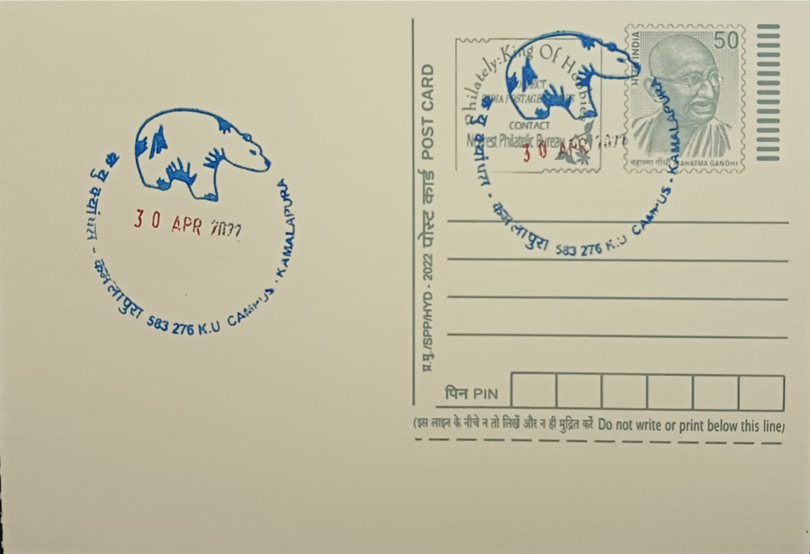

Sloth Bear-Daroji Bear Sanctuary
ಕರಡಿ-ದರೋಜಿ ಕರಡಿ ಅಭಯಾರಣ್ಯ


The Daroji Sloth Bear Sanctuary takes its name from Daroji village, which lies at the edge of the protected tract in what was then Bellary district (now Vijayanagara district), Karnataka. The area had long been known locally for its population of wild sloth bears inhabiting the boulder-strewn scrub hills of the Sandur range, a landscape continuous with the granite outcrops surrounding Hampi. Recognising the concentration of bears denning in the rocky terrain, the Karnataka Forest Department moved to formalise protection for the tract in the early 1990s, converting what had been reserved forest land into a sanctuary dedicated specifically to the species rather than to general wildlife protection.
In October 1994, the Government of Karnataka notified 5,587.30 hectares of the Bilikallu Reserve Forest as Daroji Bear Sanctuary, making it the first sanctuary in Asia created exclusively for the conservation of the sloth bear (Melursus ursinus, also classified as Ursus ursinus). Its significance lies in this singular mandate: unlike most Indian protected areas, which cover a broad spectrum of fauna, Daroji was constituted around a single flagship species whose numbers had been depleted across much of its range by habitat fragmentation and the historic 'kalandar' dancing-bear trade. The sanctuary's proximity to Hampi, barely 15 kilometres away, has additionally given it a secondary identity as an ecological counterpart to one of India's most visited archaeological landscapes.
In October 2009, the sanctuary was enlarged by the addition of 2,685.50 hectares from the adjoining Bukkasagara Reserve Forest, bringing its total notified area to 8,272.8 hectares (82.72 square kilometres). The terrain is dominated by dry scrub and thorn forest interspersed with granite boulder hills riddled with crevices and small caves, which sloth bears use as daytime shelters before emerging after dusk to forage. Population estimates derived from forest department monitoring and camera-trap surveys have placed the resident bear population in the range of roughly 120 to over 150 individuals, though researchers note that a precise census remains difficult given the species' nocturnal habits and the rugged, cave-pocked terrain it occupies.
A defining feature of visitor experience at Daroji is the artificial feeding arrangement maintained near the Yeramaraschruppa viewpoint, where forest staff place jaggery and honey at set hours to draw bears into view of an observation platform, allowing tourists a near-guaranteed sighting during evening safaris without the need to track animals through the interior. This managed feeding practice, while debated among conservationists for its departure from fully wild foraging behaviour, has made Daroji one of the most reliable sites in India for observing sloth bears in a natural rocky habitat, and has been credited with reducing bear-related conflict by concentrating animal movement away from surrounding farmland and villages.
In 2019, the Karnataka government notified an eco-sensitive zone extending roughly one kilometre beyond the sanctuary boundary, a measure intended to regulate mining, quarrying and construction pressures that had been encroaching on the buffer landscape around Daroji and Bukkasagara. The sanctuary continues to be administered by the Karnataka Forest Department under the Ballari (Bellary) wildlife division, with entry regulated through the forest checkpost near Daroji village and safari visits typically combined with trips to the Hampi monuments nearby. It remains one of the few places in the country where the sloth bear, rather than a larger predator, is the primary draw for wildlife tourists.
| Date of Introduction | January 5, 2011 |
|---|---|
| Address | Sub Postmaster, |
| Kannada University Campus SO, | |
| Vijayanagara (dt.), Karnataka - 583276. |